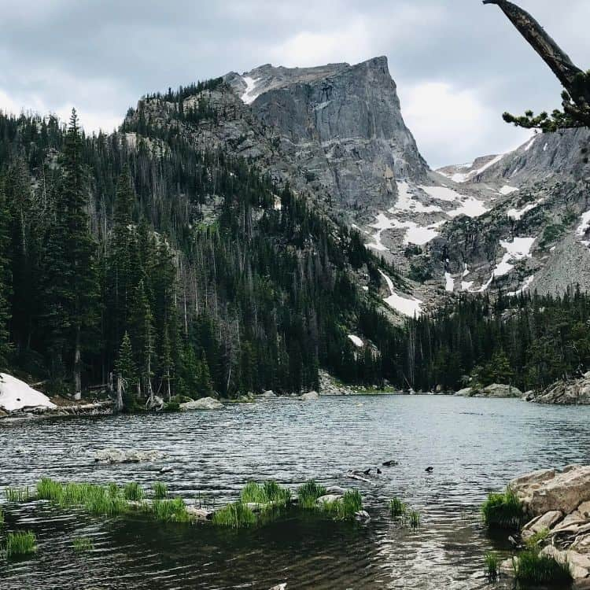
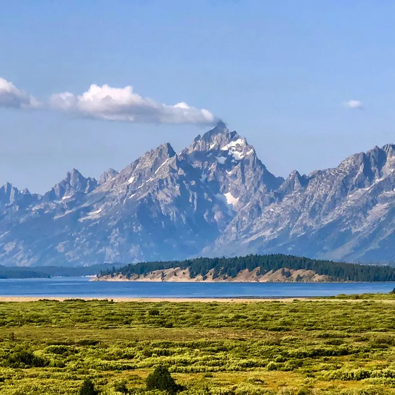
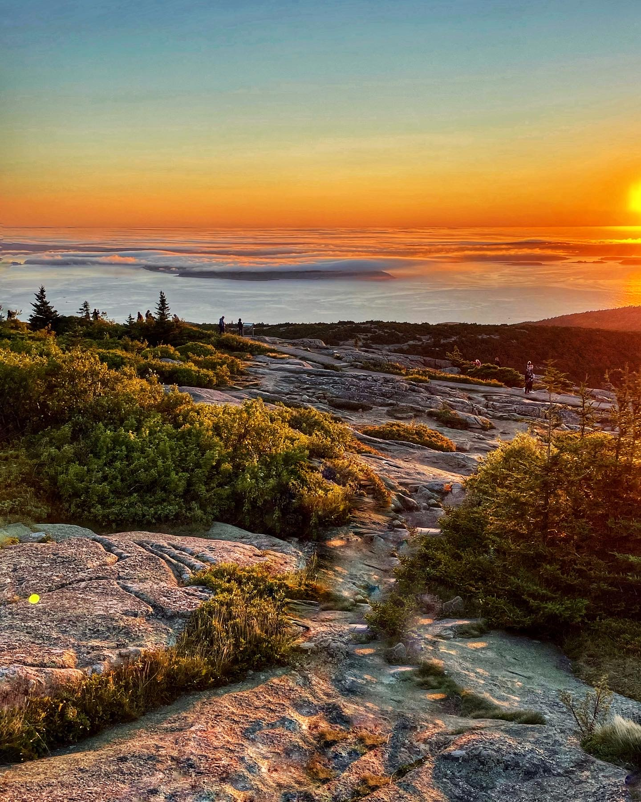

America's National Parks
This website showcases a diverse selection of some of the National parks in America, all the way from the west coast to the east coast. These national parks have so much to offer to its visitors such as: the hikes that you can go on, the sights that you can see, the different types of wildlife that is roaming these places and just give you more of a reason to outdoors and get away from everything.
Parks to Explore
Yosemite National Park

Yosemite National Park which is located in California is one of the many national parks that is located there. This national park is known for its numerous waterfalls, the very large granite mountains, and beautiful sights. Some of its more famous staples include Half Dome, El Capitan, and the Vernal Fall on the mist trail.
Learn MoreRocky Mountain National Park

Rocky Mountain National Park is located in Colorado and it is known for its beautiful wildlife, snowy mountain tops, and the glass like lakes. Visitors often hike, camp or enjoy the views from the car while driving.
Learn MoreGrand Tetons National Park

Grand Tetons National Park is located in Wyoming just south of Yellowstone National park. This gorgeous park is known for its jagged mountain peaks that poke into the sky, and the landmarks such as Jenny lake and Snake River.
Learn MoreAcadia National Park

Acadia National Park is located in Maine along the coast. Acadia has a vast variety of scenery ranging from the shoreline to the forest to the mountains.
Learn More